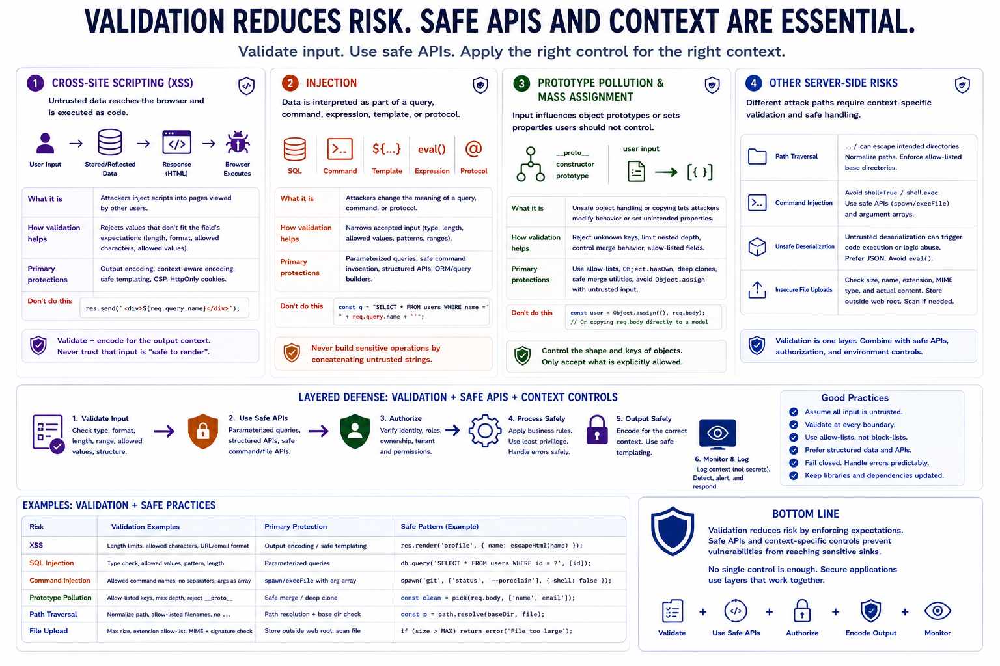

Validation and Common JavaScript Security Issues
Connecting to LMS... Progress: in progress

Narration
Validation helps reduce common JavaScript security issues, but it must be paired with safe APIs and context-specific controls. XSS risk appears when untrusted data reaches an output context without appropriate encoding or safe rendering. Validation can reject data that does not fit a field's expectations, but output encoding and safe templating are still required.
Injection risk appears when data is interpreted as part of a query, command, expression, template, or protocol. A validation rule may narrow the accepted input, but parameterized queries, safe command invocation, and structured APIs are the primary protections. Avoid building sensitive operations by concatenating untrusted strings, even when the strings passed basic validation.
Prototype pollution, at a high level, involves unsafe object handling where input can influence object prototype behavior. Validation can help by rejecting unexpected keys, limiting nested structures, and controlling merge behavior. Mass assignment is related: if request data is copied directly into objects or database records, users may set properties they should not control.
Node.js applications also need to consider path traversal, command injection, unsafe deserialization patterns, and insecure file uploads. Validation should normalize paths, constrain filenames, check file metadata, limit sizes, and enforce allow-listed fields. Still, validation is only one layer. Safe filesystem APIs, authorization, sandboxing where appropriate, and careful output handling remain necessary.